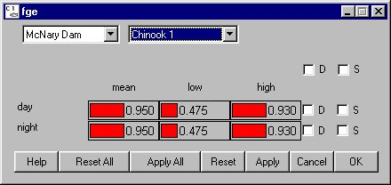

FGE opens a window for defining the fish guidance efficiency of the bypass systems at dams for day and night periods.
FGE opens a window for defining the fish guidance efficiency of the bypass systems at dams for day and night periods.
Selecting DamFGE opens a window for defining the fish guidance efficiency of the bypass systems at dams for day and night periods.
One of two possible functional relationships can be specified for fge: constant fge or time varying fge (see FGE Equation). When age dependent fge is turned off (RunRuntime Settings), the model will use the constant fge condition and the values set in this window. Day and night fge then vary randomly on each dam time interval according to a fixed probability distribution, i.e. the distribution has no seasonal trend. Fge is specific to a given dam and species and its random variations occur for each dam time interval (6 hours).
The probability distribution of constant fge is defined by a piecewise linear distribution within the range identified by the low and high values. When the low and high values are set to zero, or when the low and high are set to the mean value, COMPASS uses the mean value at all times (the term becomes deterministic). When the low and high values are not equal, COMPASS uses the mean, low and high values to randomly generate a value when executed with variance suppression turned off (RunRuntime Settings). With variance suppression turned on, COMPASS uses the mean value and ignores the high and low values. In either case, the mean value must lie within the central two quartiles of the distribution (i.e., the middle 50%). For example, if the low value is set to 0 and the high value is set to 100 then the mean value must be set between 25 and 75. If values are set that do not conform to this restriction, COMPASS will abort the run and generate an error message in the Message Log (if open) specifying which species at which dams have bad values.
The probability distributions for day and night fge set in this window are used in the calculation of time varying fge and the night fge values are displayed in the FGE Equation window. Changes applied to the probability distributions will automatically update the display in the FGE Equation window.
This is a Slider Input window.

Fge window